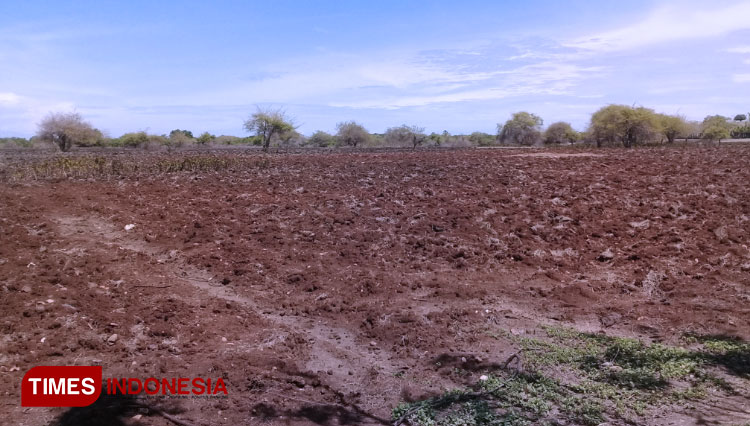

TIMESINDONESIA, SUMBA TIMUR – Menghadapi ancaman krisis komoditas pangan yang mengakibatkan kenaikan harga pangan, Desa Kadahang, Kecamatan Haharu, Kabupaten Sumba Timur disiapkan menjadi sentra penghasil sorgum selain di beberapa desa yang sudah menjalankan budi tanaman ini.
Desa Kadahang salah satu wilayah yang terletak di bagian utara Kabupaten Sumba Timur, Provinsi Nusa Tenggara Timur (NTT), dengan luas desa sekitar 23,50 kilometer persegi dengan populasi di tahun 2022 berjumlah 940 jiwa dan kepadatan 46 jiwa/km2.
Kepala Desa Kadahang Yulius Ndakajawal mengungkapkan, lahan budidaya tanaman sorgum terletak di kampung Laiwutung seluas 15 hektar (ha). Pihaknya juga melibatkan masyarakat untuk menyukseskan program tersebut.
“Ya, kita melakukan budidaya tanam sorgum ini awalnya sudah ada kesepakatan dengan warga setempat. Saat ini yang sudah mulai kita kelola lahannya seluas 3 hektar dengan ditraktor,” ujar dia.
Yulius menyebutkan, jika uji coba lahan sorgum ini tumbuh dan berkembang bagus maka akan dilakukan penambahan lahan tanam. Hal ini bertujuan agar dapat mencapai target yang diinginkan, yakni menjadikan kampung Laiwutung sebagai sentra penghasil sorgum di Kabupaten Sumba Timur, dan khususnya di Desa Kadahang.
Menurutnya, gagasan ini diharapkan pemerintah dapat membantu untuk kelancaran budi daya ini. Pasalnya, lahan di kampung Laiwutung dinilai sangat cocok untuk melakukan budi daya tanam sorgum.
Dia mengatakan, lahan yang digarap untuk tanaman sorgum ini awalnya digunakan warga untuk menanam sayuran dan kacang. Namun, karena kekuranga air maka aktivitas warga terhenti.
“Kami lihat lahan ini cocok untuk budi daya sorgum karena tanaman ini dapat tumbuh pada semua jenis tanah dan mampu adaptasi yang luas, punya sistem perakaran yang menyebar, dan lebih toleran dibanding tanaman lain,” kata dia.
Namun demikian, Yulius tetap berharap pemerintah dapat membantu aliran air ke lahan yang digunakan sebagai budi daya dan bibit sorgum. Adanya bantuan tersebut dengan harapan dapat mewujudkan daerahnya sebagai sentra penghasil sorgum di Kabupaten Sumba Timur dapat tercapai dengan baik.